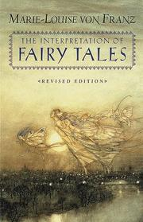

The Interpretation of Fairy Tales
Book·Marie-Louise von Franz, 1970·童话的解析

Interprets fairy tales using analytical psychology, an introduction to archetypes and symbols.
- Author
- Marie-Louise von Franz
- Year
- 1970
- Difficulty
- Intermediate
- Kind
- Primary text
- Schools
- Post-Jungian and Archetypal Psychology
Editions
- English edition The Interpretation of Fairy Tales Marie-Louise von Franz · Shambhala, revised edition · 1996 Open Library ↗